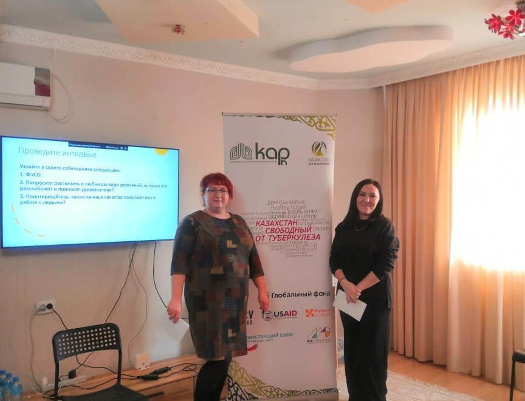
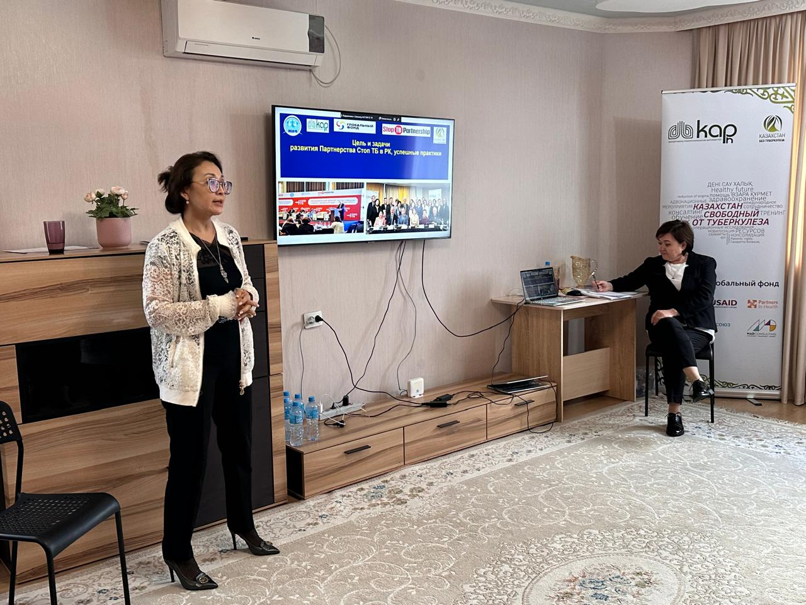
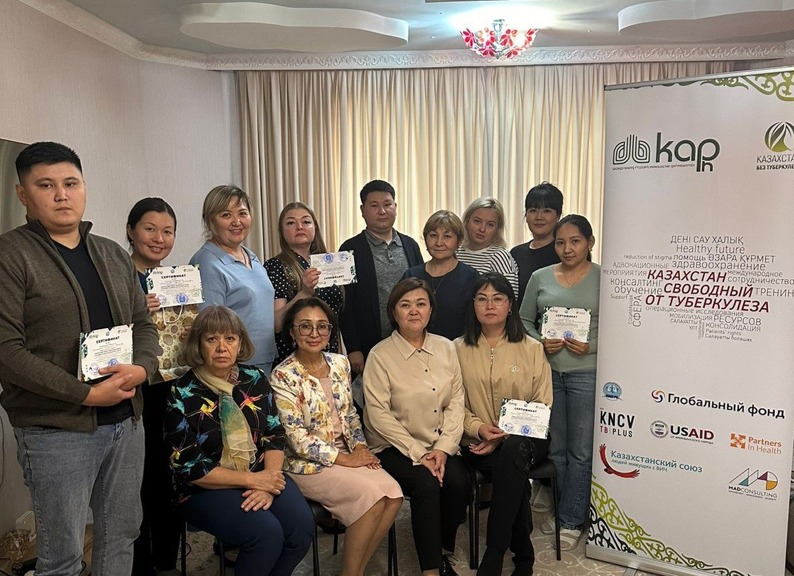
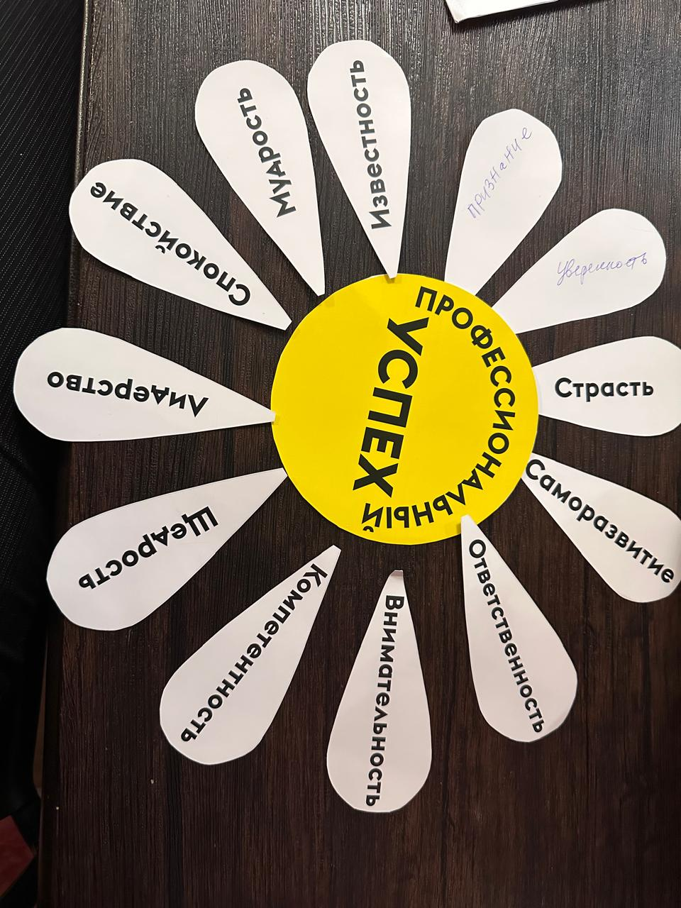
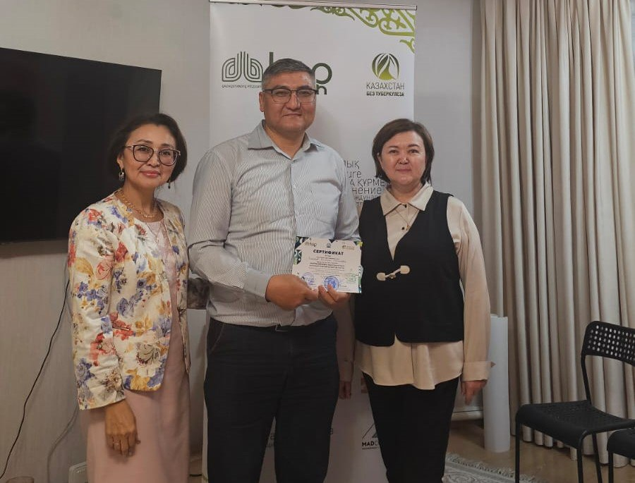

Жаналықтар
Жетістікке арналған ресурстар: Серіктестікті дамыту жағдайындағы тиімді жұмыс Тоқта ТБ.
18 қазан 2024
Өскеменде фтизиопульмонология орталығының, МСАК, ҮЕҰ және туберкулез бағдарламасына қатысатын басқа да әріптестердің жауапты мамандары үшін «Табысқа арналған ресурстар: Стоп ТБ серіктестігін дамыту жағдайындағы тиімді жұмыс» атты екі күндік тренинг өтті ТБ «Мүдделі тараптармен көпжақты әріптестік шеңберінде жауап шараларын күшейту».
Тренингті «Қазақстандық фтизиопульмонологтар қауымдастығы» ҚБ, «Қазақстандағы ТБ тоқтатайық» ұлттық серіктестігі және ҚР ДСМ Ұлттық фтизиопульмонология ғылыми орталығы ұйымдастырды.
 Мақсаты - тренингке қатысушылардың туберкулезбен байланысты стигматизацияға ұшырайтын әріптестермен, пациенттермен және олардың жақын ортасымен өзара іс-қимыл жасау мәселелерінде коммуникативтік дағдыларын дамыту.
 Тренинг барысында маңызды тақырыптар қаралды: - Стоп ТБ серіктестігі: жаһандық және ұлттық стратегиялар. - ҮЕҰ-ның туберкулез ауыртпалығын азайтудағы рөлі. - Туберкулездің стигматизациясы: себептері, салдары, шешу жолдары. - Сыртқы және ішкі әсер ету факторларына баса назар аудара отырып, кәсіби және эмоциялық шаршау мәселелері.

Тренинг туберкулезбен күресте тәжірибе алмасу және бірыңғай стратегияны қалыптастыру, сондай-ақ медициналық мекемелер, ҮЕҰ және басқа да ұйымдар арасындағы ынтымақтастықты нығайту алаңына айналды. Қатысушылар бұл медициналық қызметтердің сапасын жақсартуға, кәсіби дағдыларын, қоғамның туберкулез проблемасы туралы хабардарлығын жалпы арттыруға ғана емес, сонымен қатар жеке тұлғаның өсуіне де ықпал ететінін атап өтті.
#endTB #мыпобедимТБ #профессиональныйуспех #Партнерство #тренинг #развитиепартнерствастопТБ #НПОвсфереТБ #стигмавотношенииТБ #выгораниеврачей #шқофпо #вкофпц #ШҚОфтизиопульмонологиялықорталығы #вкофтизиопульмонологическийцентр #вко #бізтуберкулездіжеңеаламыз #мыможемпобедитьтуберекулез #стоптуберкулез #stoptb #туберкулез